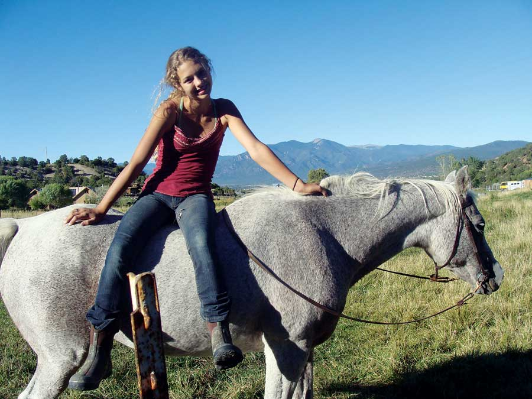
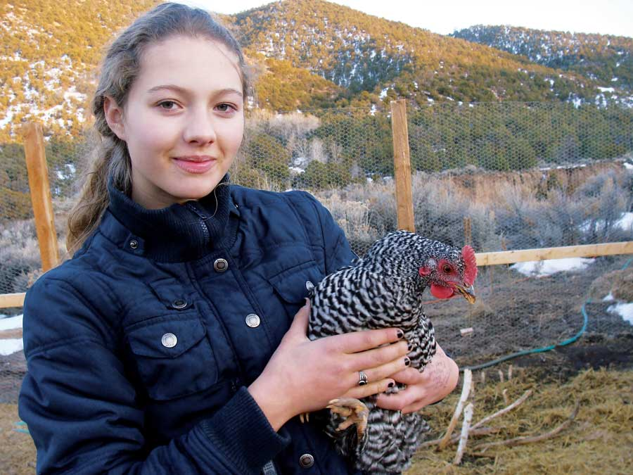
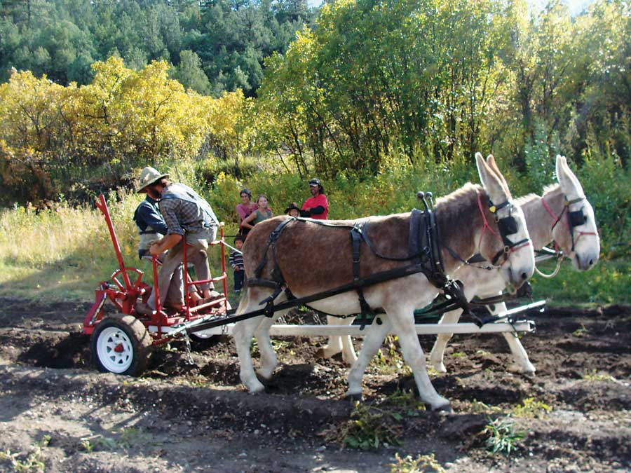
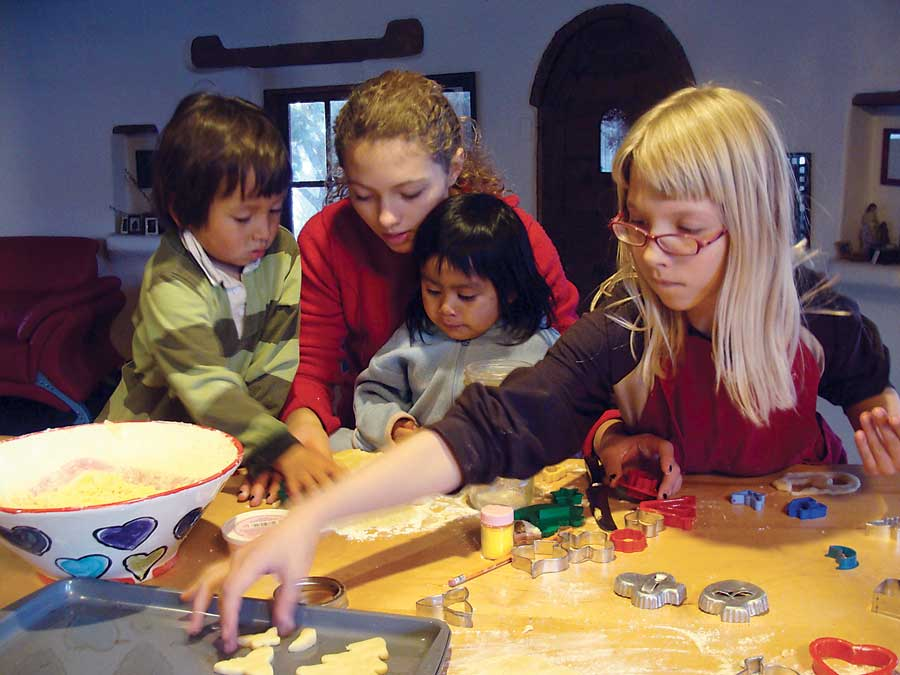
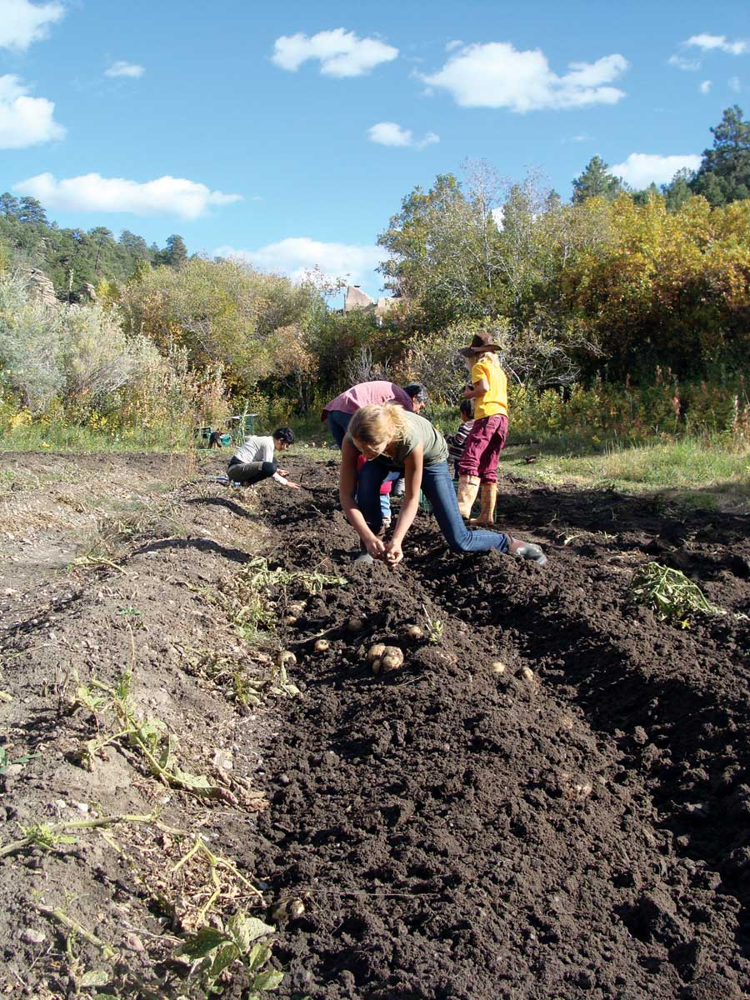
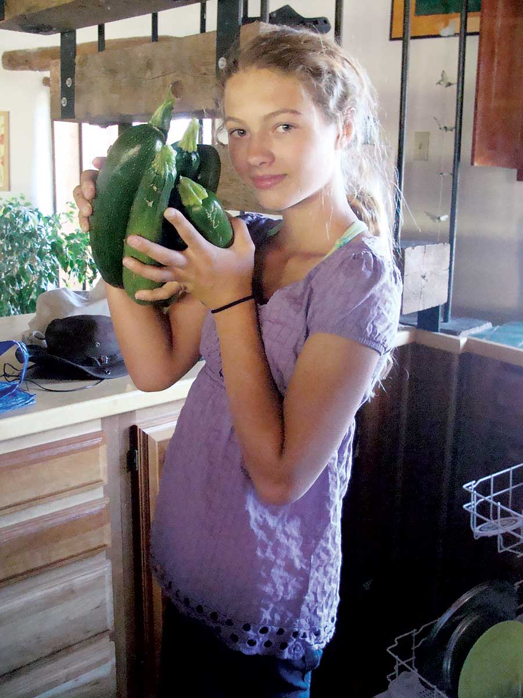
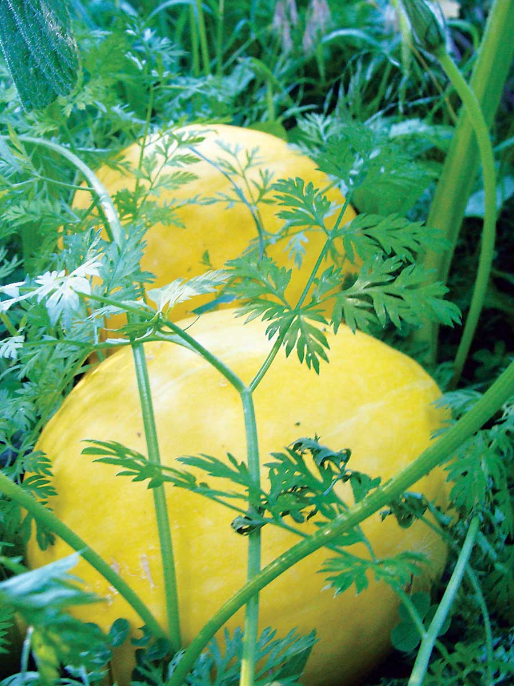
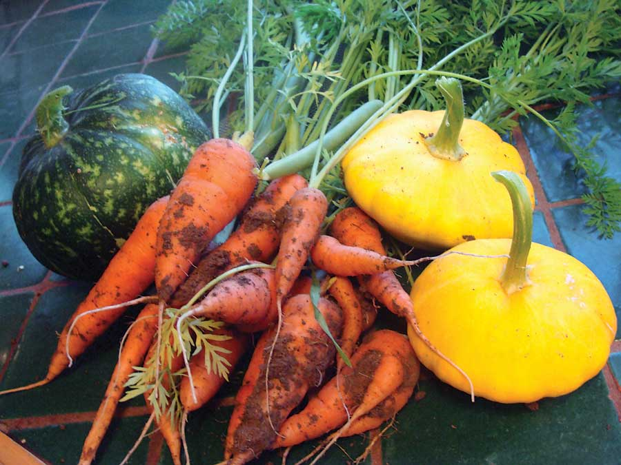
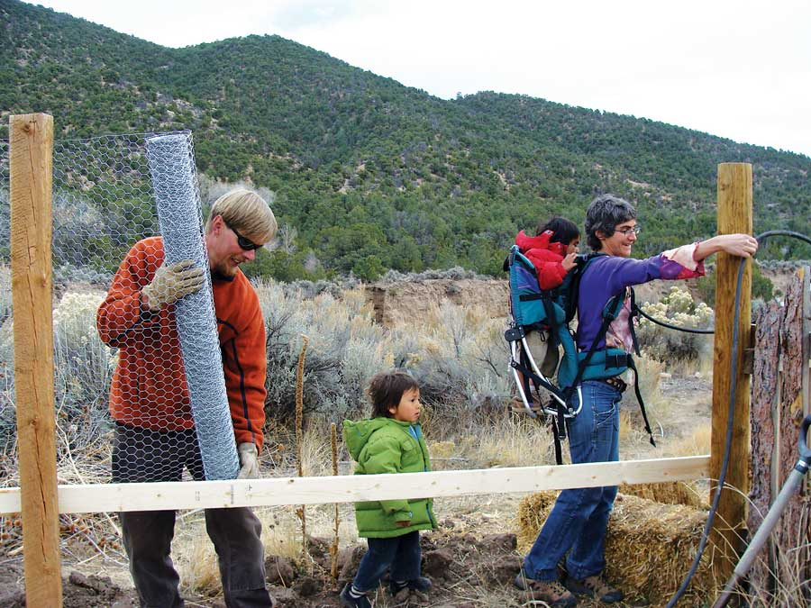

My name is Treska and I am 13 years old. I live in New Mexico, in a little town nestled in the foothills of the Sangre de Cristo Mountains, along the Rio Grande. This year, I decided that I wanted to be home-schooled. I had a few reasons for this, one of them being that I wanted to stay home near my garden. It was important to me to watch my squash plants bloom, and I wanted to harvest all the dark green, tender zucchinis hiding under their gigantic, silver-speckled leaves.
In the summer of 2008, I worked on a little farm about 5 minutes away from my house. The farmer who I worked for, Jeff, was really great and patient with me. He showed me how to do everything and answered all of my questions. At the farm, I did everything from weeding to cutting lettuce heads. I harvested garlic, spinach, radishes and peas. I even helped Jeff sell his produce at the farmers market at the end of the week. When I was working at the farm, something really clicked. I felt like I could do this kind of work forever.
I find farming gratifying and fulfilling. I called myself “the protector,” while tearing out the weeds around newly transplanted tomato plants, and felt proud when I lugged in two huge jack-o’-lantern pumpkins from outside. This was farming to me, and I loved it with all my heart.
One day Jeff took me and four other employees to visit Gemini Farm, a six-acre farm located about one hour southeast of Taos, in a tiny town called Las Trampas. Gemini Farm has about one acre of potatoes, four hothouses for tomatoes, and rotation beds of greens, radishes, carrots and many other crops. It also has about 20 goats, a handful of cats, and two donkeys named Jake and Major who do all of their plowing and help them harvest potatoes and other root vegetables.
When we arrived, after successfully finding their almost-invisible dirt road, Teague, the oldest of the two brothers who live at Gemini, was sitting on an Amish plow seat in a jungle of hanging rows of garlic, making a garlic braid. This was my first introduction to what living off the land is really like. The brothers said they had only gone to the grocery store once that month, and that was just for toothpaste and olive oil.
Later that day, I met Jennie, who had been living and working at Gemini Farm for about a year. I liked her right away. She asked me if I wanted to take a ride with her on one of the donkeys. I had never even seen a donkey up-close before, much less ever ridden one, but it seemed too good of an opportunity to pass up. I was hoisted up into the seat, and we set off into the sunset, with me on Major and Jennie atop Jake. We crossed the creek, which serves as one of the main water sources for Gemini farm, and headed off toward the brilliant green goat pastures. The heat from Major’s body was lovely, and when we stopped for a bit, I lay down on his back and felt his sides rise and fall under me as the sun went down.
In 2008, I had a garden that was wildly successful. I would come in barefoot from my garden with my arms full of zucchini, pots bursting full of kale and chard, and a fistful of green beans in my hand. I had planted arugula, onions, kale, chard, cherry tomatoes, green beans, squash, corn and scarlet runner beans. Plus, there were morning glories, marigolds and several wildflowers blooming all around the edges.
Every morning, without fail, I would wake up and visit my garden in my pajamas. I would sit in my garden and whisper to my seeds. I’d encourage them and water them. When my seeds sprouted and became seedlings, I crooned to them and plucked the weeds out from around their fragile stems. As my seedlings grew and I watched their vines tumble in curlicues from under their great, dark green leaves, I praised them and told them I was looking forward to squash and round, yellow pumpkins. I loved my garden, and my garden loved me back.
In September, when my garden was still producing lots of squash but the nights were getting cold, my family and I decided to get chickens. It seemed appropriate that farmers should have chickens and fresh eggs. So, together with our close friend and neighbor Marcy, we ordered 24 day-old chicks that came via the mail in a little box studded with holes.
Going to the post office to pick up the chicks was one of the most exciting moments of my life so far. When we walked in, I could hear them chirping. It was exactly that sound of an “entire kindergarten in a shoebox,” which Barbara Kingsolver states so accurately in her book, Animal, Vegetable, Miracle. I remember picking up the box and hearing the scrabbling of 48 little feet trying to get a bit of grip on the cardboard floor. We waited until we got home to open the box.
There stood 24 chicks, all of them the size of a toddler’s fist. The cheeping stopped abruptly. Twenty-four pairs of eyes stared up at us, and we stared back. We decided that they would live in a large dog kennel with straw, grain, a water feeder and a heating lamp. We put the chicks in and they seemed happy with the situation, running all over the place and cheeping ferociously. That night we covered the kennel with a blanket, and they all fell into a deep sleep within minutes. They snuggled together, and the light reflecting off the straw made it seem very cozy in there.
We had other adventures with our chicks. We enjoyed watching them grow, and when they got bigger, we gradually began taking them outside. We watched them run around and catch bugs and take dust baths. When they were 2 months old they moved into a large coop down the road. They recently laid their first eggs. We have lost only five chickens, and our three roosters do synchronized crowing. All in all, our chickens are truly wonderful!
I am planning on having a seedling business, for which I will start seedlings inside about two months before planting season. The seeds that I have ordered from Johnny’s Selected Seed Co. are ‘Genovese’ basil, ‘Valencia’ tomatoes, ‘Brandywine’ tomatoes and cherry tomatoes.
After I became inspired by the idea of having a seedling business, I read anything that I could get my hands on about seeds. I learned what varieties work best where, what treatment each seed should be given and all about certain types of seeds. I learned (from books and Mother Earth News) that heirloom varieties of all sorts are steadily and rapidly disappearing from our grocery stores, gardens and lives. I found this to be alarming and sad. I decided that the least I could do to help was to plant heirloom seeds. The ‘Valencia’ and ‘Brandywine’ tomatoes are heirlooms.
I am going to have 980 seedlings in my house, and I’m looking forward to the learning experience. I’ll be able to apply the techniques I learn to later gardening experiences. To me, there is no such thing as an “expert farmer.” But what any skilled farmer needs is a set of eyes, a pair of hands and a willingness to learn.
I am very excited to be embarking on this great farming project. We will be growing our own food and thus becoming part of the cycle of food and life. There is a lot of learning that needs to be done and I am looking forward to it. I am thankful for my community of friends and family that is helping make this incredible project happen, and to my pumpkin plants for blooming and giving me the courage to continue.
Nobody knows more about the joys and challenges of wiser living than those of you who already are pursuing the dream. Tell us about your experiences with the self-reliant life, and your story may be published! Submit your firsthand report (1,500 to 2,000) words, with photos, to:
Firsthand Reports
Mother Earth News
1503 SW 42nd St.
Topeka, KS 66609
We’ll pay $200 for each story we publish.
|
 KIERSTEN FIGURSKI Treska and Breezy take a pause during a ride. |
 KIERSTEN FIGURSKI Treska learns the ins and outs of self-reliance in the Sangre de Cristo foothills of New Mexico. |
 KIERSTEN FIGURSKI The Gemini Farm donkeys pull their weight in the fields by helping pull potatoes. |
|
 KIERSTEN FIGURSKI Treska and her sister, Kaya, help neighbors Rafa and Tono make sugar cookies with eggs from their chickens. |
 KIERSTEN FIGURSKI Treska, her sister and friends gather potatoes from the turned soil. |
 KIERSTEN FIGURSKI Treska with her harvest of zucchini and cucumbers. |
|
 KIERSTEN FIGURSKI Beautiful yellow squash. |
 KIERSTEN FIGURSKI Squash, a green pumpkin, and brilliant orange carrots add to Treska’s harvest haul. |
 KIERSTEN FIGURSKI Treska’s dad, Falko, and their neighbor Marcy and her two boys building the chicken coop. |